SUSTECH / CAMPUS ATLAS
选择一处标记，走进一段经历。
拖动旋转 · 向上滚动返回
建筑轮廓依据地图绘制；楼高、门位及室内为示意。
地图数据 © OpenStreetMap contributors
正在展开校园蓝图…
校园 / 工学院南楼 / 科研经历
RESEARCH LOG / 01
可视化方向
空间为蓝图示意
SONG HE / PERSONAL ARCHIVE
南方科技大学 · 2029 届本科（预计）
实习、科研与校园生活，构成我的大学经历。目标岗位：AI 产品经理。